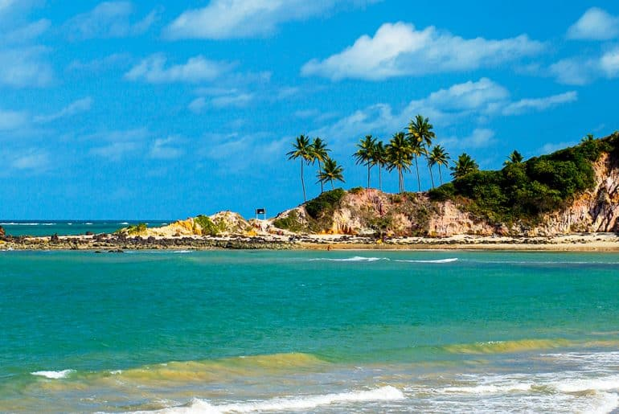

Conheça a Zona Sul

Conheça a região de expansão residencial, universitária e de serviços, seus bairros, parques, praças e praias.
Bairros e localidades
- Água Fria
- Anatólia
- Bancários
- Cidade dos Colibris
- Colinas do Sul
- Costa do Sol
- Cuiá
- Ernesto Geisel
- Gramame
- Jardim Cidade Universitária
- José Américo
- Mangabeira (I a VIII)
- Muçumagro
- Paratibe
- Valentina de Figueiredo
Turismo, parques e lazer
- Parque das Três Ruas
- Vista Alegre Park
- Haras e Hípica
- Parque Bosque das Águas
- Parque Natural Municipal do Cuiá
- Praia de Jacarapé
- Praia do Sol
- Praia Barra de Gramame Norte
- Praça Soares Madruga
- Praça Dorcas Teles - Parque Linear Valentina II
Eventos e programação
Fique por dentro dos eventos, atividades culturais e atrações da região.